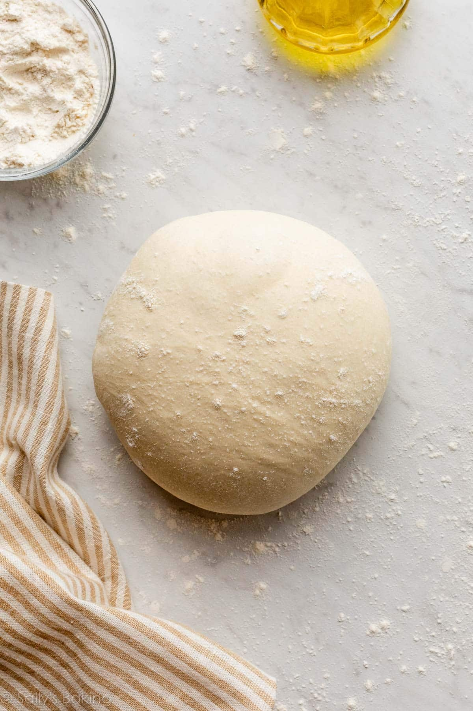

1. Combine 1 cup (125g) of flour, instant yeast, sugar, and salt in a large bowl. If desired, add garlic powder and dried basil at this point as well.
2. Add olive oil and warm water and use a wooden spoon to stir well very well.
3. Gradually add another 1 cup (125g) of flour. Add any additional flour as needed (I've found that sometimes I need as much as an additional ⅓ cup), stirring until the dough is forming into a cohesive, elastic ball and is beginning to pull away from the sides of the bowl (see video above recipe for visual cue). The dough will still be slightly sticky but still should be manageable with your hands.
4. Drizzle a separate, large, clean bowl generously with olive oil and use a pastry brush to brush up the sides of the bowl.
5. Lightly dust your hands with flour and form your pizza dough into a round ball and transfer to your olive oil-brushed bowl. Use your hands to roll the pizza dough along the inside of the bowl until it is coated in olive oil, then cover the bowl tightly with plastic wrap and place it in a warm place.
6. Allow dough to rise for 30 minutes or until doubled in size. If you intend to bake this dough into a pizza, I also recommend preheating your oven to 425F (215C) at this point so that it will have reached temperature once your pizza is ready to bake.
7. Once the dough has risen, use your hands to gently deflate it and transfer to a lightly floured surface and knead briefly until smooth (about 3-5 times). Use either your hands or a rolling pin to work the dough into 12" circle.
8. Transfer dough to a parchment paper lined pizza pan and either pinch the edges or fold them over to form a crust.
9. Drizzle additional olive oil (about a Tablespoon) over the top of the pizza and use your pastry brush to brush the entire surface of the pizza (including the crust) with olive oil.
10. Use a fork to poke holes all over the center of the pizza to keep the dough from bubbling up in the oven.
11. Add desired toppings (see the notes for a link to my favorite, 5-minute pizza sauce recipe!) and bake in a 425F (215C) preheated oven for 13-15 minutes or until toppings are golden brown. Slice and serve.